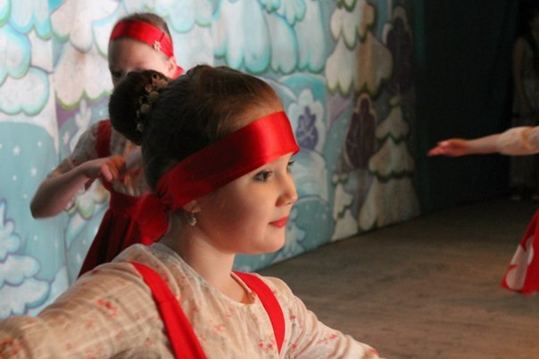

Образцовая танцевальная студия "Браво"

Когда мне было 3 года, родители отдали меня заниматься народными танцами в детскую студию. Там мы очень весело проводили время с друзьями и подружками, все время танцевали, учились новым движениям, отрабатывали связки и зрелищные элементы. Мы учились танцевать в команде у нас это получалось. Теперь я даже не представляю как могла бы сложиться моя жизнь, eсли бы у меня не было этого увлечения - танцы!
Наш коллектив ездил в многие города Кировской области и не только. Среди них есть такие города, как Киров, Нолинск, Кирс, Кирово-Чепецк, Москва, Казань и другие.
Танцевальная студия "Браво" - это не просто группа для занятий танцами, это семья, в которой каждый ощущает себя важной частью этой семьи, это друзья, с которыми не скучно, это целый мир, в котором каждый находит себя.
Наш коллектив активно участвует в творчесской жизни города, района,области в концертных программах и мы верим , что впереди у нас новые конкурсы и победы !!!!
Я благодарна родителям, что когда-то привели меня на танцы.